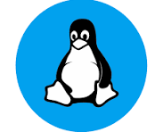

Linux HealthCheck
CPU, Memory, Disk, Network — full system diagnostics with rich insights.
Application HealthCheck
Service uptime, logs, dependencies, and response monitoring.
Jenkins Application Builds
Jenkins jobs, pipelines, logs & service monitoring.